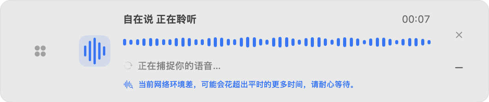
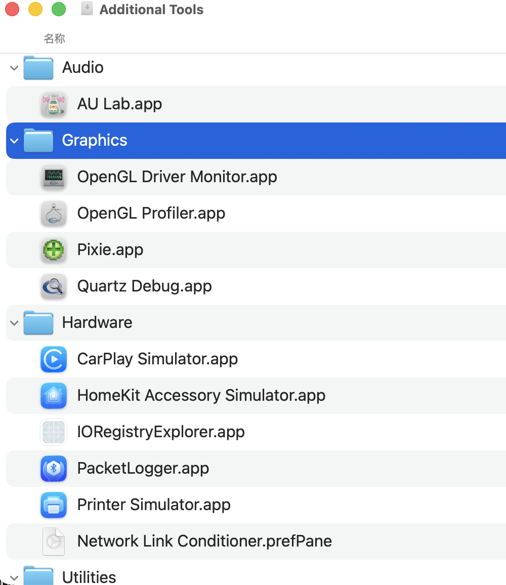
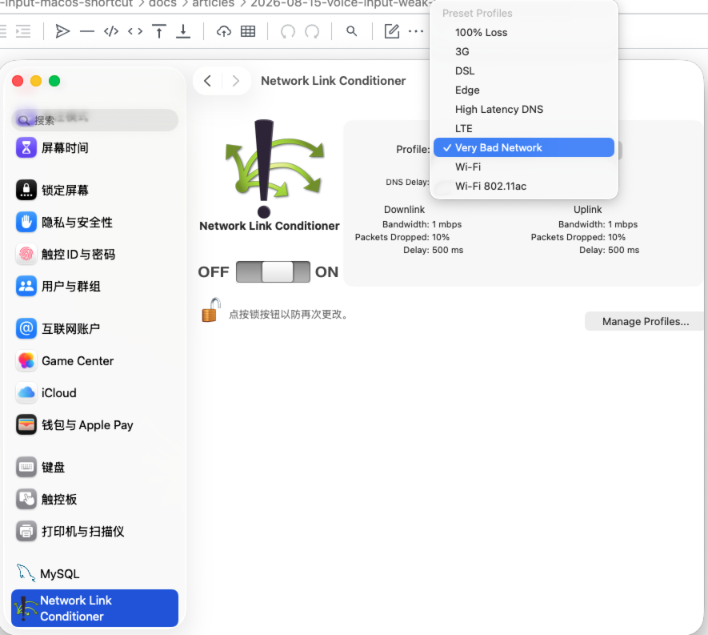

▌▌▌
金融人 AI 工作流实战第11篇
阿康导读：弱网不只是慢一点，语音输入最怕的是声波在动、用户却不知道内容有没有被听见。这次用手机热点实测后，我补了等待提示、断网提示，也顺手找到了 Mac 自带的弱网测试工具。
前几天家里没有网络，所以只能用手机热点来上网了。
平时用得还好，上网、发邮件都没有什么问题，但是自从用了我的AI语音输入法之后，问题就出现了，因为我的手机信号刚好在某些区域就是不太行...
声波识别的动画还在，麦克风收到声音了，但是页面上迟迟没有文字显示出来，有时候需要等待十几秒钟才能看到文字慢慢出现；如果网络稍微差一些的话，识别和链接就会中断。
这才发现，之前测试最多的还是正常的Wi-Fi网络，但对于这种弱网的情况并没有做充分的考虑。
一开始，我想着是不是把录音先作为文件存下来，等到实时识别变慢的时候就自动切换到非实时模型。因为很多语音模型其实除了支持我们在用的websocket实时识别外，也有非实时的录音文件识别的方案。
但是为了小概率的弱网情况而加入一套完整的文件识别，并且增加了不少工作量：需要保存整个录音、上传、处理重试、防止实时结果和文件结果同时出现在输入框里，还是有点繁琐的。
所以我评估下来，觉得还是先把体验问题解决更合适点，不搞这么复杂了。弱网环境下，我最大的痛点不是等待时间长，而是根本不知道语音输入法到底有没有在工作，也没有任何提醒告知我。
在此基础上，这次把弱网和断网两个小场景都进行了处理，增加了对应的提醒信息：
（1）弱网环境 一直有收到语音消息但是很久没有看到识别出来的文字时候，就会出现一条提示：
当前网络环境差，可能会花超出平时的更多时间，请耐心等待。
文字识别出来之后，提示也会随之消散。

（2）完全断网环境
如果真的出现全部断网的情况，那么就不能让用户再等待下去了，识别框应该给出明确的提示：
检测到断网，请连接网络后再使用。
它可以停留几秒钟或者被手动关闭，并且不会再像之前，一闪而过一个输入法界面，但并不知道发生了什么。
功能改好了，想要测试的话除了再等一次“家里断网”，还可以借助一些软件来实现。
以前我用的是Chrome开发者工具来模拟浏览器的网络状况，但这次是mac桌面软件，于是想到了一个问题：Mac上有没有类似的工具呢？
一查发现还真有，苹果在Xcode的附加工具中就包含了这个Network Link Conditioner.

安装之后，在macOS系统的设置中就可以看到了，可以选用默认值也可以自行调节带宽、延时以及丢包率等参数。
这次我选择了 Very Bad Network：
上行和下行的带宽都是1Mbps。 上行和下行丢包率都为10%。 上行、下行时延均为500ms。

注意它不是真的断了网，而是把网络变成了高延时和丢包的状态，用来测试“可以连接但是很慢”的情况就刚好。
打开弱网模拟设置后，开始用AI语音输入法测试。
第七秒的时候，声音依然在动，文字还没有出来，弱网的提示就已经出现了。
再等一下，大概在26秒的时候就会有文字被识别出来了，并且提示也会自动消去。
我还把网络全部切断来测试一下，这时的状态和弱网不同：弱网还可以等出结果，而完全断网之后就直接结束了本次识别，并且会显示没有网络的情况。
本次没有做大的功能改进，“继续等”与“先别录”区分开来，在网络比较差的时候，用户不能只看到声音在跳动；无网络的时候也不能看到识别框一闪而过的状况。
但这个功能并不是我最初的产品设计计划中，属于使用中发现的问题并进行的优化。一开始考虑主要还是识别准确、快捷键操作交互啥的，真正高强度用了一段时间并刚好遇到这个特殊产经，才注意到有这么个坑。
许多的产品功能就是这样来的，早期规划可以覆盖常见的流程，而真正用的时候才会把边角的问题暴露出来。
TIPS：此次网络速度模拟工具是Network Link Conditioner，在Xcode中可以找到Additional Tools里的它。做完测试之后要记得关闭系统的弱网络开关，否则其他的软件都会受到影响而变得很慢。
以上，有启发的话，欢迎点个赞、在看，也可以转发给有需要的朋友。
看完记得关注@阿康AI探索号
及时收到更多AI实战内容
↓ ↓ ↓